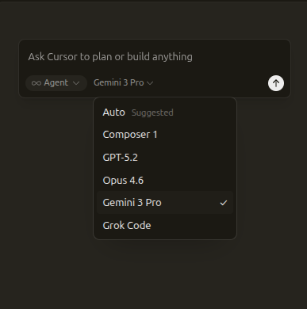
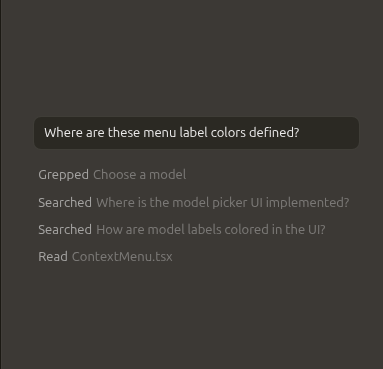

Built to make you extraordinarily productive, Cursor is the best way to code with AI.
Download for Linux
Download for Linux
Trusted every day by millions of professional developers.
Accelerate development by handing off tasks to Cursor, while you focus on making decisions.
Learn about agentic development ->
Our specialized Tab model predicts your next action with striking speed and precision.
Learn about Tab ->Cursor reviews your PRs in GitHub, collaborates in Slack, and runs in your terminal.
Learn about Cursor's surfaces ->“It was night and day from one batch to another, adoption went from single digits to over 80%. It just spread like wildfire, all the best builders were using Cursor.”

“My favorite enterprise AI service is Cursor. Every one of our engineers, some 40,000, are now assisted by AI and our productivity has gone up incredibly.”

“The best LLM applications have an autonomy slider: you control how much independence to give the AI. In Cursor, you can do Tab completion, Cmd+K for targeted edits, or you can let it rip with the full autonomy agentic version.”

“Cursor quickly grew from hundreds to thousands of extremely enthusiastic Stripe employees. We spend more on R&D and software creation than any other undertaking, and there's significant economic outcomes when making that process more efficient.”

“The most useful AI tool that I currently pay for, hands down, is Cursor. It's fast, autocompletes when and where you need it to, handles brackets properly, sensible keyboard shortcuts, bring-your-own-model... everything is well put together.”
“It's definitely becoming more fun to be a programmer. We are at the 1% of what's possible, and it's in interactive experiences like Cursor where models like GPT-5 shine brightest.”

Choose between every cutting-edge model from OpenAI, Anthropic, Gemini, xAI, and Cursor.
Explore models ->
Cursor learns how your codebase works, no matter the scale or complexity.
Learn about codebase indexing ->
Trusted by over half of the Fortune 500 to accelerate development, securely and at scale.
Explore enterprise ->
Cursor is an applied research team focused on building the future of software development.
Join us ->
Recent highlights
A new interface and our first coding model, both purpose-built for working with agents.
Our new Tab model makes 21% fewer suggestions while having 28% higher accept rate.
Achieving a 3.5x MoE layer speedup with a complete rebuild for Blackwell GPUs.
Download for Linux